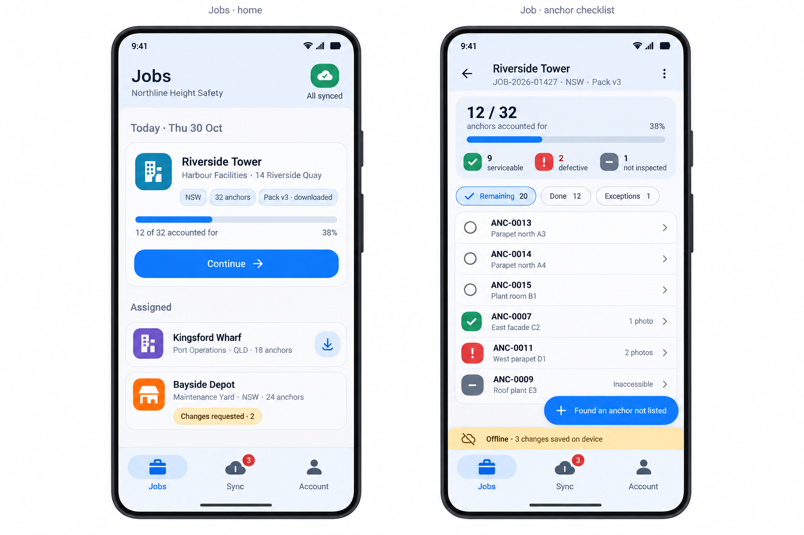
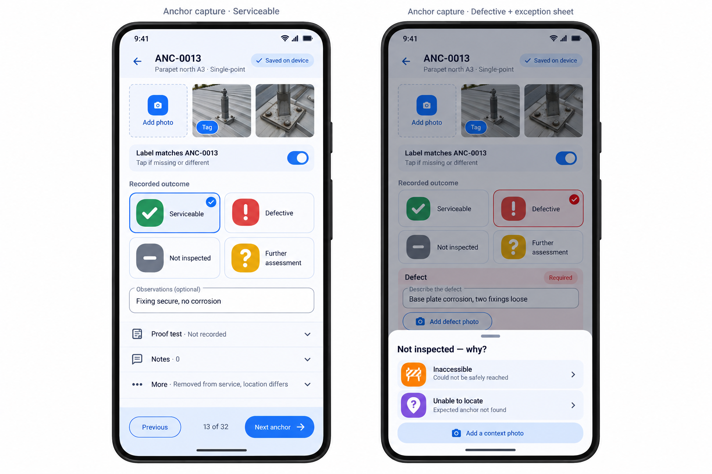
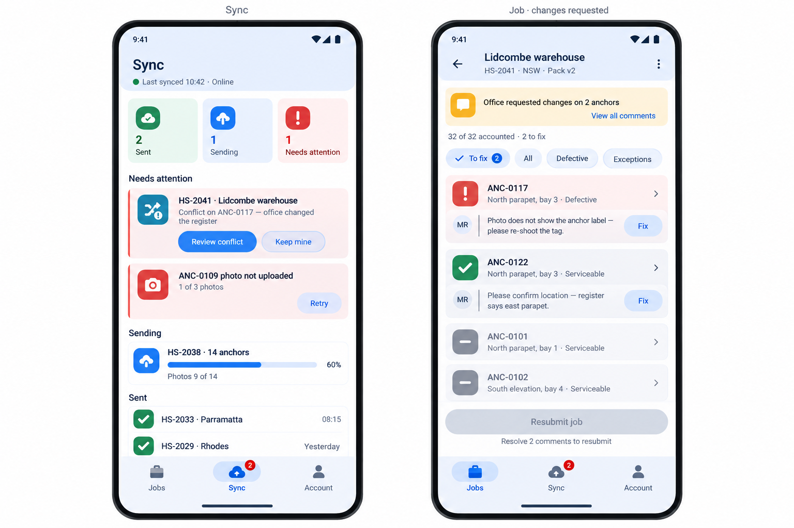
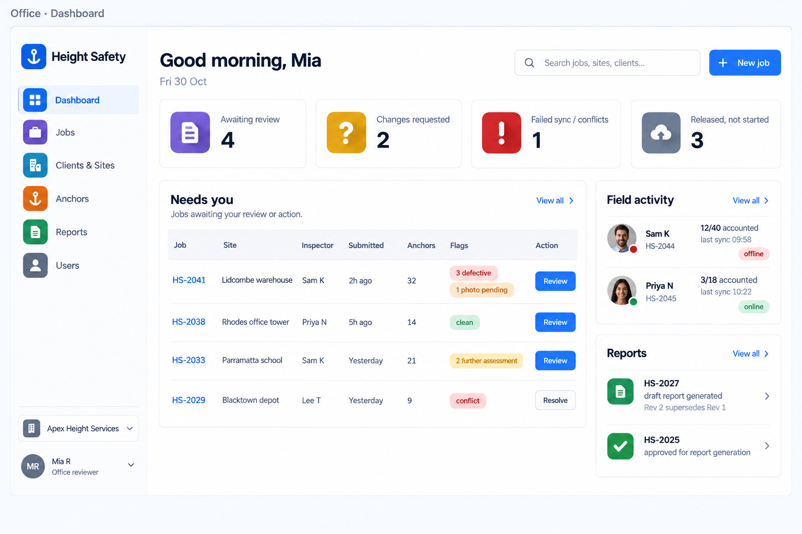
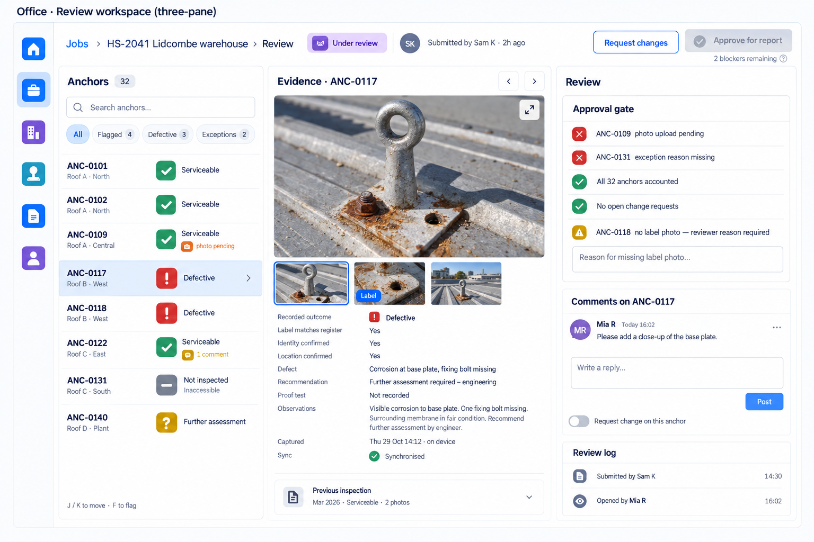
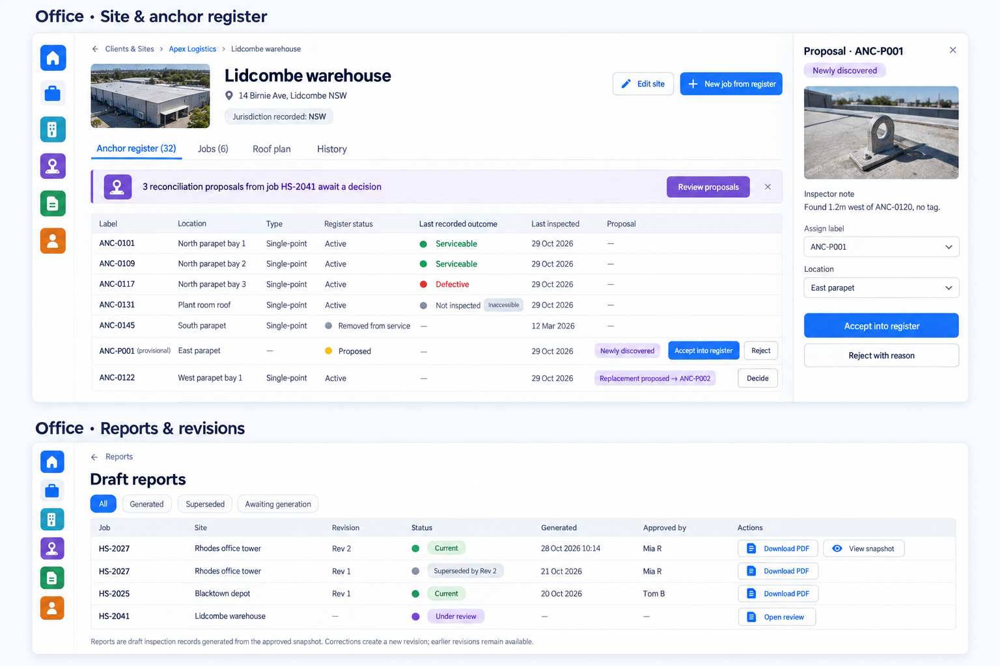
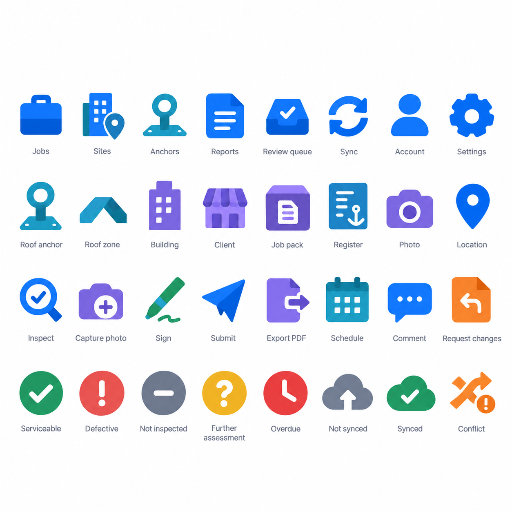
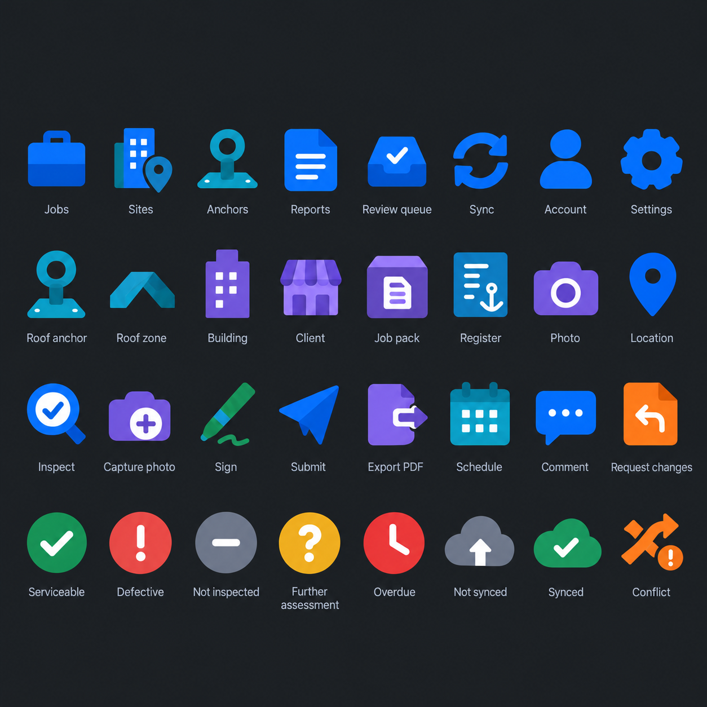
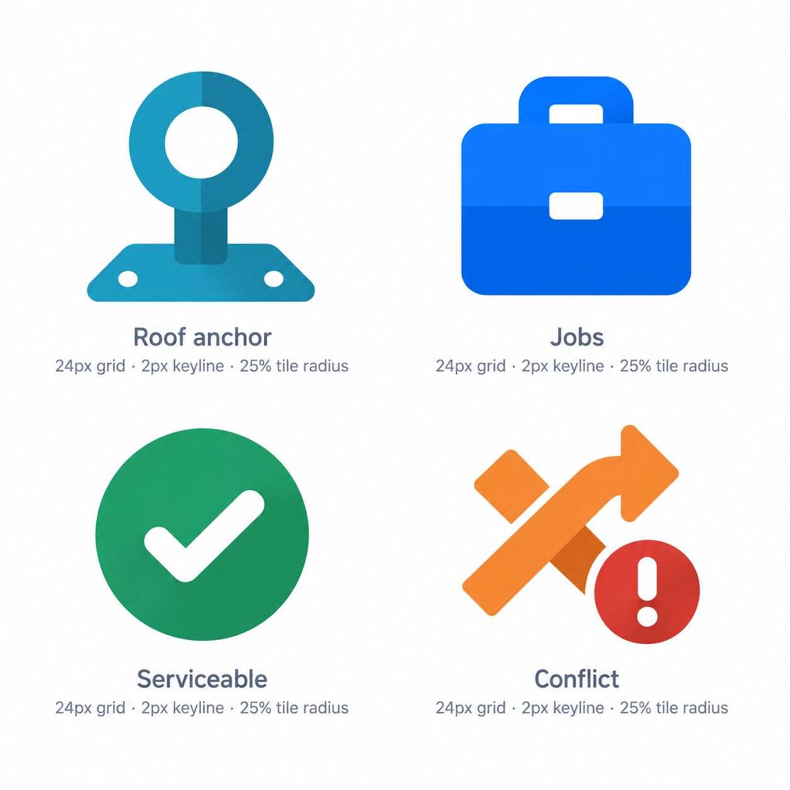

Android (Material 3) · Jobs home and job anchor checklist

Android (Material 3) · Anchor capture (Serviceable default · Defective + exception sheet)

Android (Material 3) · Sync tab and job with changes requested

Web · Dashboard

Web · Review workspace (three-pane)

Web · Site & anchor register · Reports & revisions

Icon set — light

Icon set — dark

Icon construction detail
